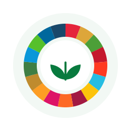

1
Erradicação da Pobreza
Acabar com a pobreza em todas as suas formas, em todos os lugares.
Sem critérios vinculados nesta versãoOs 17 objetivos da Agenda 2030 da ONU que orientam os critérios de sustentabilidade aplicados às contratações públicas estaduais.

Erradicar a pobreza e a fome e garantir dignidade e igualdade.
Acabar com a pobreza em todas as suas formas, em todos os lugares.
Sem critérios vinculados nesta versãoAcabar com a fome, alcançar a segurança alimentar e promover a agricultura sustentável.
Sem critérios vinculados nesta versãoAssegurar uma vida saudável e promover o bem-estar para todos, em todas as idades.
Sem critérios vinculados nesta versãoAssegurar educação inclusiva, equitativa e de qualidade ao longo da vida.
Sem critérios vinculados nesta versãoAlcançar a igualdade de gênero e empoderar todas as mulheres e meninas.
Sem critérios vinculados nesta versãoProteger os recursos naturais e o clima para as próximas gerações.
Garantir disponibilidade e manejo sustentável da água e saneamento para todos.
Sem critérios vinculados nesta versãoAssegurar padrões de produção e de consumo sustentáveis.
4 critérios na plataformaTomar medidas urgentes para combater a mudança climática e seus impactos.
4 critérios na plataformaConservar e usar de forma sustentável os oceanos, mares e recursos marinhos.
Sem critérios vinculados nesta versãoProteger a vida terrestre, gerir florestas e deter a perda de biodiversidade.
2 critérios na plataformaAssegurar vidas prósperas e plenas, em harmonia com a natureza.
Assegurar acesso a energia confiável, sustentável, moderna e a preço acessível.
2 critérios na plataformaPromover crescimento econômico sustentado, emprego pleno e trabalho decente.
Sem critérios vinculados nesta versãoConstruir infraestrutura resiliente e promover industrialização inclusiva e inovação.
Sem critérios vinculados nesta versãoReduzir a desigualdade dentro dos países e entre eles.
1 critério na plataformaTornar as cidades inclusivas, seguras, resilientes e sustentáveis.
3 critérios na plataformaPromover sociedades pacíficas, justas e inclusivas.
Promover sociedades pacíficas e instituições eficazes, responsáveis e inclusivas.
1 critério na plataformaMobilizar os meios necessários para implementar a agenda.
Fortalecer os meios de implementação e revitalizar a parceria global.
1 critério na plataformaCada critério da plataforma indica os objetivos aos quais contribui, ajudando a comunicar o impacto de cada contratação.